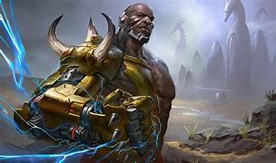
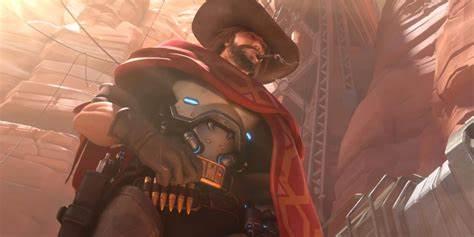

in the beginning of overwatch the game was as any other game a new popular game with glitches and unbalanced with characters or champions, as some call it that was overpowered for example. a character called bastion, (a omnic that transforms into a turret)
at the start of the game bastion had a shield, it would make him able to sit ina corner and spray and pray to win, his health is 200 with 50 armour and he has a self heal ability,with 1000 shield, he also had very good mid to long range damage, and he's a hitscan which hitscan has dominated overwatch since release date, with the exception on dive meta which would effect the hitscans for a short time until the nerfs to projections like doomfist and genji, but what made bastion overpowered was the turret form that gave him 300 bullets and worked like a minigun attached to his back.
now bastion was not the only overpowered character in this champion based 6v6 game, for example reaper had a special ability which allowed him to pick up dark orbs or the life force of the enemy to full heal which only he could see the orbs/life forces, so the team would think hes taking a stroll through the map instead of helping out but he was really going to get his hp back. you may think, well he is called reaper so it makes sense he can steal the life force of others, but ina champion based game you have to balance this ability out which was not possible considering the weakness of character like genji which only had shurikens or doomfist who only had his robotic fist with a hand cannon which had 4 shots with no reload, instead you gained 1 spread back overtime.
now let's talk about the weaker champions like doofist, now doomfist is a projectile based character with his main weapon being a robotic fist which is a melee based weapon, doomfist's fist has 3 uses, uppercut, rocketpunch and seismic slam, each ability now gives him 30 shield per enemy hit bringing his health at a peak of 400 effective hp (normal hp is 250 without shield) but before doomfist was nerfed he was an assasin getting in and out of danger without dying but it didn't last long as his nerfs came such as,Loss of air control duration decreased to 0.6s (from 3s) with uppercut, Maximum range drecreased to 15m (from 20m), Victims no longer lose air control while being pulled in to the seismic slam, Inner ring damage radius increased to 2.0m (from 1.5m – this is the ring where Meteor Strike deals its full 300 damage) Max damage outside of inner ring decreased to 200 (from 300 – this is the ring where damage falloff happens, which still reduces the damage down to 15 at max range) to the meteor strike ultimate ability which made him less effective as he couldn't do what he was designed todo (be an assasin) in the current meta.
there's too many champions to explain them all so i will stop there for now as we move on to the rating and how active the community now to how active it once was, here's a chart to show you

as you can see the chart displays numbers of viewers (in thousand's) from january 2018 to january 2021. in january 2018 the game had almost 45,000 viewers but that soon dropped in september 2018 as it experienced a downwards trend with roughly 22,000 viewers then in july 2019 it got to it's peak hitting roughly 47,500 viewers but that was short lived as 2 months late (september 2019) it dropped a considerable amount to just under 15,000 viewers. why is this is the question many people ask but the way they have tried to balance the game just doesnt work they do buffs and nerfs consistantly but cant get it right, to this day mcree is the most broken character which is an achievement considering there an actual turret in the game, to this day overwatch ony jas 22,000 roughly estimated viewers and is struggling to survive in todays world as they cant keep up with other games being realeased today. will overwatch survive i dont have the answer.
